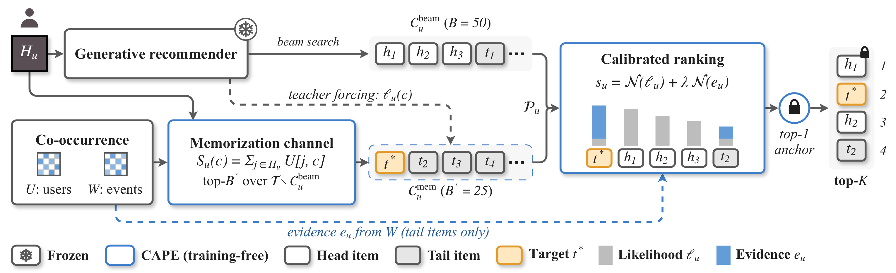
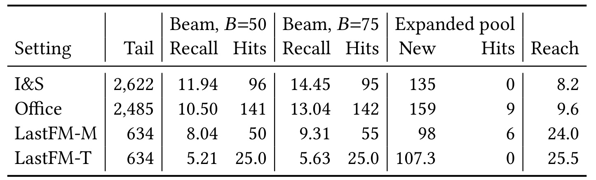
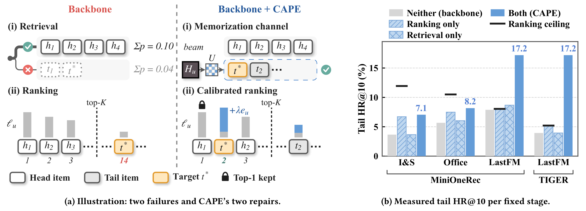
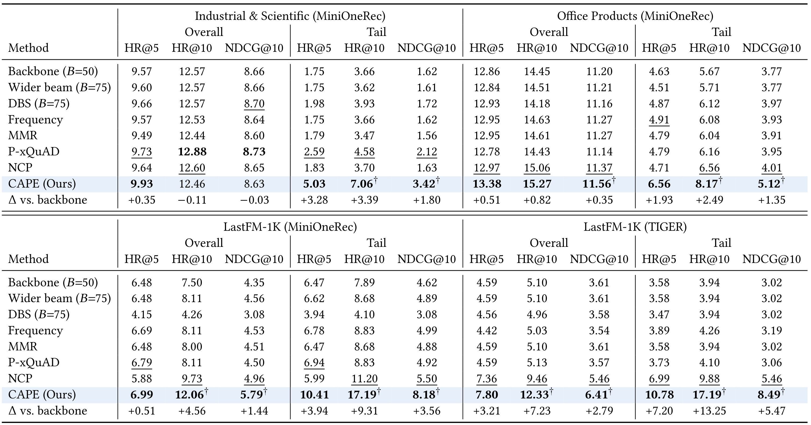
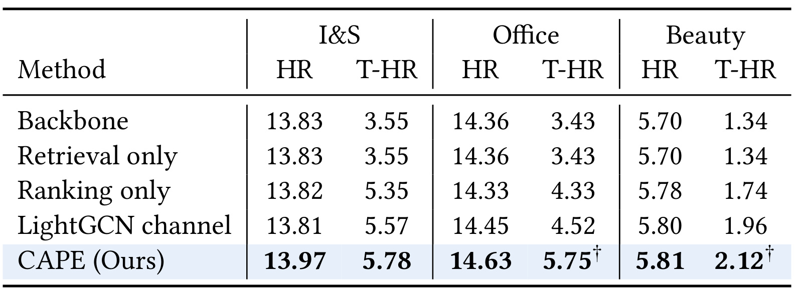
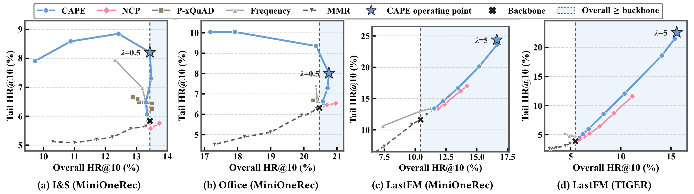
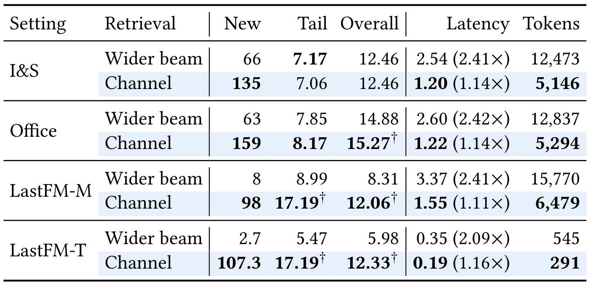
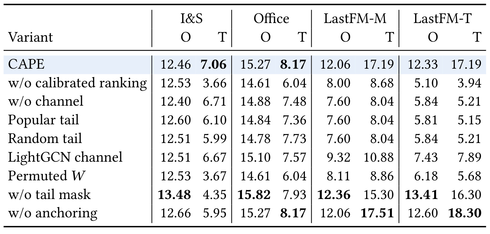

CAPE：给生成式推荐补回物品级共现记忆
CAPE 研究生成式推荐中的两次长尾损失：物品先因语义标识符前缀的概率质量较小被束搜索剪掉，即使补进候选，又可能被同一模型似然排到展示列表之外。论文通过冻结生成器之外的物品级共现通道补充候选，再用共现证据校准排序，让协同过滤式记忆与生成模型的泛化共同工作。全文题为 Generative Recommenders Forget the Long Tail: Restoring Memorization in Retrieval and Ranking，可从唯一论文入口 arXiv:2610.29298阅读。原文未提供可独立核验的代码或项目入口；以下数值均为作者离线报告，本笔记未复现实验。
第一作者 Xu Huang 的主要机构为中国科学技术大学，完整作者包括 Xu Huang、Jiancan Wu、Hongzheng Qin、Jiawei Feng、Can Ye、Wencong Zeng、Fengze Li 与 Xiang Wang。其中 Can Ye、Wencong Zeng、Fengze Li 在原文标为独立研究者，不能由邮箱域名推断正式任职。论文 v1 于北京时间 2026-10-21 14:49 公开，本笔记于 2026-10-23 精读。
共享分数让长尾物品被遗忘两次：检索时因前缀子树概率质量偏低而被提前剪枝，进入候选后又被相同似然排在头部物品之后。
1. 背景和问题
1.1 统一生成器为什么仍然需要记忆
生成式推荐把物品编码成几个离散的语义标识符，输入用户历史后，模型逐个生成标识符的词元。约束束搜索负责找到合法物品，完整序列的似然再决定展示次序。这样，经典系统里召回和排序分别承担的工作集中到同一个模型与同一个分数。它确实减少了模块数量，却也让一种偏差在两个阶段重复出现：某个物品在模型里概率较低，首先可能没有机会进入候选；即使外部把它找回来，同一个低概率仍会让它落在展示截断线之后。论文将这个现象定位为物品级记忆的缺口，而非笼统归咎于生成模型能力不足。
这里的记忆指训练数据中哪些具体物品共同出现，不是语言模型是否记住文本，也不是用户的长期对话记忆。协同过滤可以直接保留“交互过物品甲的人也交互过物品乙”的关联；共享语义标识符和共享模型参数更偏向通过相似表示泛化。泛化能够把稀疏对象关联到相似对象，但同一组表示也可能抹平低频物品独有的连接。论文的核心疑问是：当物品级关联仍然存在于训练交互中时，生成推荐是否在检索和排序阶段都没有利用它，能否在冻结模型的前提下把这部分证据重新接回来。
长尾的定义必须先说清。作者按训练集交互频次对整个目录排序，取最低的约百分之八十作为尾部集合，剩余为头部。频次统计覆盖训练历史和目标里的物品出现，频次相同时按首次出现顺序确定边界；因此实际表中尾部数量不一定恰好等于目录数量乘零点八。这个划分不等于曝光低、不等于冷启动，更不等于新增物品：一个尾部物品可以有共现记录。CAPE 正是利用这些已有记录，所以不能把它讲成零交互物品推荐方案。测试目标属于尾部的样本占几组数据一半以上，长尾准确率具有明确的离线研究意义，但它仍然只是相关性代理，未直接测量创作者收益或真实用户满意度。
1.2 两个边界：候选池上限与前缀质量
令用户历史为 $H_u$，真实下一个物品为 $c_u^*$，最终展示列表为 $L_K(u)$，尾部集合为 $\mathcal T$，尾部目标测试样本集合为 $\mathcal U_T$。原文式二定义尾部命中率：
符号解释：这里分母是所有尾部目标测试样本，包含未进入任何候选池的目标；不能把分母换成已召回尾部目标，否则会把候选遗漏隐藏掉。尾部 NDCG 对命中样本按位置折扣，未命中仍记零，总体指标则对所有测试样本平均。有些 Amazon 用户对应多个测试样本，因此样本数与独立用户数并不相等；论文在区间估计时按用户成组抽样，正是为了保留这种依赖。若候选池记为 $\mathcal C_u$，最终展示只能从中选取，则尾部命中率上限就是候选池对全部尾部目标的召回率。任意后处理都无法让未进入池子的目标成为命中，这一结论与具体排序器形式无关。
另一个边界来自束搜索的决策粒度。物品共享一个标识符前缀时，前缀保留与否主要由整棵子树的概率质量决定，而不是由其中最好物品的概率决定。原文式三把这个关系写为：
符号解释：$z_{\le t}$ 为长度为 $t$ 的前缀，$\ell_u(c)$ 为完整物品标识符的对数似然，$\epsilon_\theta$ 是以此前缀开始但最终不对应合法物品的续写概率。作者实现屏蔽非法词元但保留原词表概率，因此这个非负余项不能直接删掉；若每步重新在合法词元上归一化，余项才为零。附录的直观例子是，一条前缀包含一百个各概率零点零零一的物品，总质量零点一；另一条前缀只含一个概率零点零五的物品。仅保留一条前缀时会留下前者，却错过全目录单项概率最高的物品。这个例子说明局部搜索与最终物品排序之间存在结构性失配，并不证明所有生成模型必然存在相同幅度的长尾问题。
因此，只给所有低频物品加一个相同奖励仍然不充分。一方面，被剪掉的物品没有排名可调；另一方面，某个语义前缀内部经常同时有头部和尾部物品，给前缀加分会一并帮助头部兄弟节点。作者测得三组主数据中，百分之九十六以上的尾部物品在第一个词元上与头部共享前缀。这解释了为什么他们把干预单位选择为完整物品：用训练共现指定应该补哪些物品，再单独校准这些物品获得的排序证据。这个问题设置也限定了结论范围：它研究的是束搜索生成推荐、已有交互支持的低频物品和单目标下一物品预测，不等于证明所有统一生成推荐都必须回到传统多阶段架构。
评测时还应区别三个容易混淆的量。候选尾部召回问真实目标有没有进入可评分范围，尾部命中问它有没有进入展示列表，目录覆盖则问许多用户累计看到了多少不同物品。CAPE 主证据属于前两类，不能把尾部命中的改善自动写成全目录覆盖或曝光公平性的提升。即使每位用户有二十五个额外尾部候选，最终前十仍可能几乎由原候选组成；反过来，增加展示尾部比例也可能只重复少数较热门的尾部物品。作者用随机尾部和较热门尾部作为控制，正是在检查相关性关联是否超过名额本身的价值。
训练频次、共现矩阵与测试历史的时间关系同样影响结论。如果把测试交互提前加入计数，尾部划分和物品对证据都会被污染，两个阶段的改善将无法解释。论文明确只从训练拆分计算这些统计，冻结模型并在验证集选强度，这使新增信息来源相对清楚。实际复核时应保留相同边界：测试历史虽然是预测时可见输入，但不能反过来用于构造全体用户的离线共现矩阵。这样才是在测利用历史可得证据，而不是让未来目标间接进入检索索引。
2. 方法
2.1 用用户级共现建立记忆检索通道
原文第四节按检索通道、记忆校准排序、顶位锚定三个部分组织。先固定生成器参数、标识符编码和原始束搜索，宽度为五十，得到 $\mathcal C_u^{\mathrm{beam}}$。每个物品对应一段已知的短标识符，原文式一的完整似然为：
符号解释：$L$ 为标识符长度，多数组合是三个词元，少量音乐物品因解决碰撞需要第四个词元。$z_t(c)$ 是候选物品已知的第 $t$ 个词元，并非监督标签在推理时泄露给模型：系统是在对一个候选打分，不是在查看用户真实下一物品。补充通道产生的二十五个候选通过教师强制批量计算这段已知序列的条件概率，与原始束搜索候选形成可比较的模型分数。实现还检查两类似然误差在设定容差内，避免约束解码时的概率归一化差异制造虚假收益。

Figure 2 从左到右展示了两条数据流。上方是原有生成器：用户历史输入后沿束搜索得到五十个候选，模型与解码逻辑保持冻结。下方先由用户级共现矩阵找到原池外的尾部物品，再把这些完整物品标识符交给相同模型评分。两路在七十五个候选的池子中合流，右侧排序模块另读事件级共现证据，并保留原来第一项。图中的两种矩阵不是同一统计量的两个名字：蓝色虚线从事件矩阵接到排序，用户矩阵则进入检索。若实现时只准备一个统一共现分，就偏离了作者实际方案。目标物品示意在下方通道获得入场资格，然后通过校准到达第二位；这个例子解释信息流，不代表每个新增尾部物品都将被展示。图中的统计矩阵由训练集预先计算，因此请求时查询的是已经冻结的物品关系，不需要先为当前用户重新训练模型。两路候选必须用相同版本的物品标识符，并在合并前排除重复；否则七十五这个预算就不再具有公平比较含义。池内融合对所有候选计算，但尾部掩码会把头部的事件证据置零，这个细节决定图中蓝色增量具体落在哪些柱子上。原始最高似然物品上的锁只保护第一位，第二至第十位发生变化，所以图不能被读成全列表保序的保证。教师强制虚线也强调模型似然仍然存在，共现只改变候选集合及融合证据，并未直接取代生成器。对于已有生成式推荐系统，这个连接方式的价值是能在不重新训练大模型的前提下检验共现信号的增量价值；实际接入仍需准备统计存储、候选去重和额外前向计算。
具体检索统计 $U[j,c]$ 记录训练用户中同时交互过物品 $j,c$ 的不同用户数，先对历史各位置求和，再在原束外尾部集合选取前二十五项。原文式四、五为：
符号解释：$S_u(c)$ 是候选支持度，$U[i_p,c]$ 是历史位置物品与候选的共同用户数，$n$ 是历史长度。求和时每个位置取一行统计，因此它表达当前历史支持候选的总强度；如果两个历史物品都曾与候选被不同用户共同消费，它们的支持会累加。这个操作没有先做相似度归一化，也没有利用目标测试标签，数值含义仍是训练共现支持而非概率。
符号解释：$n$ 是历史长度，$i_p$ 为第 $p$ 次历史交互；重复历史物品按位置重复贡献，不能在用户级共现矩阵之外又默认为历史去重。$U$ 的用户去重减少重度用户对单个物品对计数的支配，而历史聚合保留当前用户重复兴趣。并列按物品索引打破。只从原束以外取尾部物品意味着预算全部花在补覆盖上，避免同一物品占用两路名额。原文附录还比较过事件共现检索：用户级统计在三组数据中的两组覆盖更多验证目标，因此最终选它用于检索；这不是理论上断言用户计数始终优于事件计数。
2.2 用事件级共现校准候选排序
得到七十五个候选之后，仍按模型似然排序可能把新增尾部全排出去。作者另建 $W[j,c]$，统计训练序列中物品对在不同位置共同出现的事件数。它按训练历史加目标序列的有序位置对累加，保留重复出现的强度；这与不同用户数有本质区别。比如某个用户重复播放两首歌会产生多个事件对，但只贡献一个共同用户。原文式六先对用户历史求事件支持度均值，再通过尾部掩码限定作用对象：
符号解释：$e_u(c)$ 是排序证据，头部候选为零。这个掩码很关键：未经限制的共现本身通常也偏向热门物品，若对全池都奖励强共现，可能进一步抬高本来就受模型偏爱的头部。掩码的含义是把物品级记忆用于纠正尾部欠评分，而不是把事件次数直接解释成无偏偏好。它不消除训练数据的流行度偏差，也不能为没有共现支持的冷物品凭空制造信息。
原文式七、八将模型似然和共现证据分别在当前候选池上做极差归一化，再融合：
符号解释：$s_u(c)$ 为最终融合分，$\lambda$ 是验证选择的证据权重，$\mathcal N$ 对模型分与事件证据分别归一化。两个分量都基于同一用户的当前候选池，权重不作用于目录频次本身。候选模型分即使较低，也可能由对应用户的强共现证据补回；没有相应支持的候选不会仅凭低频身份获得任意大的奖励。该分数用于重排，不是重新定义生成器的词元条件分布，因此不参与原始束搜索。
符号解释：$\mathcal P_u$ 是两通道并集，$\lambda$ 控制相对证据强度。模型对数概率与计数无法直接按数值量级相加，按池归一化使权重更可解释；证据恒定时归一化为零，退回模型似然顺序。均值中的历史长度因子在同池归一化后不改变排序，因此它不提供额外的短历史置信度校准。附录确实尝试过按历史长度缩弱权重，但没有得到改善，最终采用统一强度。还要注意极差归一化依赖候选池极值：改变池子会改变既有候选的相对分量，排序变化不一定只发生在新增物品附近，部署时需要观察候选池组成和异常大计数的稳定性。
2.3 顶位锚定、强度选择与两阶段互补
最后保留原束里似然最大的物品 $a_u$ 为第一项，再从其余候选按融合分取前九项。这个操作逐用户保证第一项不变，因而 HR@1 与骨干相同；它不保证总体 HR@10 或 NDCG 不下降。权重在全验证集网格中选择，候选值为零、零点零五、零点一、零点二五、零点五、一、二、五：先筛选总体 HR@10 至少达到骨干的点，再最大化尾部 HR@10，平局按总体 NDCG 和更小权重处理。约束作用在验证集，分布变化之后的测试总体指标仍然可能降低。所有重排基线按相同规则选择权重，使对比更接近排序机制差异。
训练与推理的边界很清晰：生成模型不训练，两个稀疏矩阵只从训练交互构建一次，验证数据只选权重，测试用户历史用于按行聚合。新增计算是查稀疏行、选二十五个物品、对已知标识符做一轮批量评分、在七十五项内计算证据并排序。CAPE 的“免训练”描述准确，但不等于无训练数据依赖，也不等于无在线成本；统计矩阵更新与模型标识符版本必须保持一致，否则物品编号错配会直接污染证据。
3. 实验结果
3.1 实验设置与两次遗忘的直接证据
主比较使用 MiniOneRec 和 TIGER 两种骨干。前者以 Qwen2.5-1.5B 为基础，在 Industrial & Scientific、Office Products 与 LastFM 上运行；后者采用残差量化标识符与编码器解码器架构，音乐域主比较报告三个随机种子均值。Amazon 三个域上的 TIGER 作为方法冻结后的额外迁移检查，含更大的 Beauty 目录。商品历史取最近十项，两个主商品域按时间八比一比一划分；音乐用每位用户最后两次交互分别作验证与测试。各方法共享骨干与基础束，推理精度为 FP32。I&S 有三千六百七十个物品、四千五百三十三个测试样本，其中二千六百二十二个目标为尾部；Office 对应三千四百四十四、四千八百六十六、二千四百八十五；LastFM 则为四万零四百二十九个物品、九百八十七个测试样本，其中六百三十四个尾部目标。这个规模差异会影响共现覆盖、候选上限与性能增益的解释。

Table 1 先把“未召回”和“召回但未展示”分开测。原五十束对尾部目标的召回率只有百分之五点二一至十一点九四，因此任何只重排原束的做法都被这个很低的上限限制。把宽度加到七十五，I&S 的尾部召回从十一点九四升到十四点四五，但尾部命中从九十六降为九十五；Office 的召回从十点五升到十三点零四，命中只多一个。额外计算找到的目标没有自动变成展示命中，说明扩大束宽并未解决相同似然排序的瓶颈。进一步给模型提供二十五个共现检索物品后，四组分别多出一百三十五、一百五十九、九十八和约一百零七个尾部目标，而原似然仅把其中零、九、六、零个排进前十。这比只观察最终 HR 更直接地定位了排序失配。表末 Reach 是原束遗漏目标中，在用户共现尾部前五十可达的比例，商品域约百分之八至十，音乐域约四分之一，说明另一路统计信号确实存在，但仍远未覆盖全部遗漏。Reach 的分母与前面全尾部目标召回率不同，不能横向把二者当作同一种准确率。新增目标数也不是新增命中数：是否能留下最终增益，需要结合校准排序和被替换的原有命中一并核算。这张诊断表使后面的双阶段设计具有可证伪的依据，也解释音乐域为何更需要补召回。

Figure 1 是作者原始的两个部分组成的同一张图。左半先画共享前缀的剪枝：头部子树聚合质量更大时，含目标的尾部子树在物品级比较之前就消失；随后展示另一种独立失败，即目标已经在候选中，但低似然把它排到截断线之外。对应修复一条负责补入完整物品，另一条负责提供尾部排序证据，并在顶部锁住原第一项。右半的四组柱状图把这套机制变成可检验的交叉消融：灰柱为原骨干，斜线柱只改排序，交叉纹柱只加候选，蓝柱同时做两项。黑横线是原始束的尾部召回上限，它限制只改排序能到达的位置。音乐域中只改排序几乎触到黑线，继续微调排序难以越过缺候选的结构性上限；加入独立通道后蓝柱才明显超越该线。商品域中原束已有部分尾部目标，但原排序没能转化成命中，所以排序单项贡献较大。两半共同表达的是“先确认目标在哪个阶段丢失，再选干预”，而非所有数据上检索和排序贡献相同。若蓝柱只高于原模型却没有高于两个单项，还不足以说明完整方案有必要；这里四组蓝柱都超过单项，才与互补解释一致。原图左侧没有刻画真实全量物品树，它用少量头尾物品说明概率筛选，不能从方框数量估计实际尾部占比。右侧柱高是离线尾部命中率，与目标物品在前十中的排序位置相关，不代表目录覆盖率或展示尾部比例。该图含方法示意与交叉消融，在这里同时核对干预对象和预期实验签名，再结合下文主表检查代价。
3.2 主结果：尾部改善明确，总体保留需逐列核对

Table 2 中 CAPE 的尾部 HR@10 在四组设置依次为百分之七点零六、八点一七、十七点一九、十七点一九；骨干分别为三点六六、五点六七、七点八九、三点九四，对应增加三点三九、二点四九、九点三一、十三点二五个百分点。这里说的是百分点，不是相对百分比。尾部 NDCG 同时提高，说明收益不只是把目标勉强放到第十位：例如 I&S 从一点六二升到三点四二，TIGER 音乐域从三点零二升到八点四九。相同七十五候选上的最强重排对手在 I&S 是 P-xQuAD，尾部命中四点五八；其余三组是 NCP，分别六点五六、十一点二、九点八八。CAPE 相对这些对手的优势说明不能仅用“多给了二十五个候选”解释结果，候选固定以后如何融合证据仍然重要。不过总体列必须诚实阅读：I&S 的总体 HR@10 是十二点五七到十二点四六，降低零点一一个百分点，总体 NDCG 也从八点六六到八点六三。论文正文称总体保持，但主表并不支持数值完全不降，本笔记以表中数值为准。其余三组总体 HR@10 分别提高零点八二、四点五六、七点二三个百分点，所以能说大部分设置改善，不能说所有设置无代价。总体 HR@5 在四组提高，也不与总体 HR@10 某组略降矛盾：列表中段可能调整得更好，同时第六至十位丢掉少量原有命中。指标截断位置不同，数值变化方向就可能不同，不能挑一个位置的改善概括所有位置。主表把总体和尾部分开报告，正有助于发现这种代价。配对用户自助区间中 I&S 总体差为负零点一一，区间负零点七零到零点四八，跨零只表示没有在该区间检出显著变化，不等于统计证明无损。
更细的机制对照也有助于避免过度宣传。普通流行度校正、MMR 和 P-xQuAD 的尾部收益小，并不是它们永远无效，而是它们没有准确区分“哪个尾部物品对这个用户相关”。NCP 已经加入共现，因而在三组上更强，但其不受尾部掩码约束的计数奖励也会帮助热门候选。音乐域两种骨干起点差很多，CAPE 后尾部命中率恰好接近同一个数值，提示共现可提供跨模型的补充证据；这仍是固定数据与预算下的结果，不能据此认定模型架构从此不重要。总体与第一位依然不同，尾部上限也仍然很低，尚有大量目标不在最终列表中。
3.3 冻结方法后迁移到新的骨干和商品域

Table 3 将方法与选择规则冻结后应用到 TIGER 的三个商品域。I&S 尾部 HR@10 从三点五五到五点七八，Office 从三点四三到五点七五，Beauty 从一点三四到二点一二；总体分别从十三点八三到十三点九七、十四点三六到十四点六三、五点七零到五点八一。作者报告三个种子均值，尾部相对增幅约百分之五十八至六十八，绝对提升则为二点二三、二点三二、零点七八个百分点，两个口径都需要保留。Beauty 初始值低，百分比看起来较大，但最终尾部命中仍只有百分之二点一二，不能把相对提升讲成已经解决问题。表中仅检索三个域都没有带来尾部变化，进一步印证原似然会过滤新增目标。仅排序能改善，但 I&S 总体略低于原模型，Office 也略降；完整方法则在这三个域总体均高于骨干。LightGCN 通道在 I&S 已很接近完整方法，尾部五点五七对五点七八，因此应把它理解成具体搭配下的比较，而不是说图模型检索都无法保留尾部。Office 与 Beauty 的显著性标记更明确，I&S 中完整方法高于各行但未标同等显著性。与主实验的音乐域相比，商品域增益幅度明显较小，这也符合表一中共现可达范围较小的诊断；不能把音乐域十几个百分点的提升当作商品目录的预期。表内没有单独的服务成本列，迁移效果成立也不意味着新骨干上的额外开销与主实验完全相同，仍应另测批量评分和统计访问。冻结后再评估减少了针对每个新组合改方法的自由度，是可迁移性的有价值证据；然而权重仍在各自验证集选择，并非不看目标域数据就能零样本迁移。
3.4 权重的验证集权衡与测试外推

Figure 3 的每个点对应一个融合强度，横轴总体 HR@10，纵轴尾部 HR@10，背景虚线和着色区域表示总体不低于骨干的可行区域，星号为被选择的操作点。商品域选零点五，音乐域选五，这种差异说明数据域对记忆证据的需求不同，而不是存在一个普适的最优权重。CAPE 在可行区内达到更高尾部值，尤其音乐域与其他曲线分离较明显，支持它在一定总体约束下具有更好的验证集权衡。读图时应避免把曲线当成训练收敛轨迹：点是不同超参数配置，不是时间；同一条线连接的是离散网格，也不保证连线中间的配置实际评估过。两组商品域存在更高尾部但总体不足的点，正说明只看纵轴选点会改变研究目标。图中的最优表现来自验证集，不应与主表测试数值混用；I&S 验证选择满足总体约束，测试却小幅下降，已经展示出经验约束在样本外可能失效。附录继续把强度扩展到更大值，音乐尾部仍有少量上涨，但那是看过测试后的事后检查，不能反过来当作无测试参与选择的主结果。极端地只按共现排序会损失商品域总体命中，也表明模型分量仍然必要。这张图更适合用来设计本地验证与约束流程，而不能提供生产无损上线保证。
3.5 同样的候选预算，召回质量与延迟如何变化

Table 4 控制额外候选数和最终排序规则，比较七十五束与五十束加二十五物品通道。新增尾部目标，通道四组是一百三十五、一百五十九、九十八、约一百零七，宽束分别六十六、六十三、八、约二点七；对音乐域而言，直接绕过前缀检索确实扩充了不同目标。可是 I&S 的尾部 HR@10 宽束加相同排序为七点一七，通道为七点零六，宽束略高零点一一个百分点；总体均十二点四六。因此准确说法是通道在该域用更低成本获得接近的效果，不是通道每个数据集都更准。Office 通道尾部八点一七对七点八五，总体十五点二七对十四点八八；音乐域差距更大，体现通道的价值与原束覆盖不足有关。延迟是完整请求均值，包括准备输入、束搜索、通道检索、教师强制、证据和排序。I&S 通道一点二秒、宽束二点五四秒；Office 一点二二对二点六；MiniOneRec 音乐一点五五对三点三七；TIGER 音乐零点一九对零点三五。相对骨干，通道仍增加约百分之十一至十六，宽束增加约百分之一百零九至一百四十三。它是比较经济的增量计算，不是免费获得的收益。延迟比值参照的是各自骨干，因此零点一九秒与一点二秒不能拿来直接判断通道实现优劣，它们包含不同生成模型的基础成本。表内没有误差条，也没有长尾用户请求分位数；单用户平均更快不保证并发服务的高分位延迟相同。教师强制批量大小和历史缓存策略都可能改变结果。测试仅在一张 A40、FP32、每模型首一百二十八位测试用户上平均，经过两位验证用户预热，不能代表全测试吞吐、并发尾延迟或线上硬件配置。
模型输入词元也说明为什么成本差距不与候选数量成正比。宽束需要在每个标识符层维持更多分支，I&S 从通道方案约五千一百四十六输入词元增长到一万二千四百七十三；通道已经知道完整标识符，可在共享历史后一次批量打分。矩阵存储则暴露另一类预算：商品域用户与事件矩阵约一点八和二点四兆字节，音乐域用户矩阵四百五十四兆字节、事件矩阵三十六兆字节。模型冻结没有消除统计索引规模问题。四万物品目录还远小于工业目录，能否在更大目录维持行聚合效率，需要单独测量稀疏度、更新时间和内存访问，而不能简单线性套用这张表。
3.6 消融识别了哪些必要条件

Table 5 中去掉校准排序，尾部结果退回三点六六、六点零四、八点六八、三点九四，证明把目标交给模型不等于模型愿意把它展示出来。去掉通道，只对原束校准，商品域还能达到六点七一、七点四八，但音乐域只有八点零四、五点二一，正好对应原束尾部召回上限附近。两部分的互补不是所有数据上等比例发生：商品域主要先修排序，音乐域必须补入新目标。随机尾部与较热门尾部通道都保留相同名额，却明显低于按用户共现选择，说明收益不仅来自强行设置尾部配额。将事件矩阵的物品身份随机打乱，即使通道保留，尾部命中也退到三点六七、六点零四、八点八六、五点六八；这项对照尤其有助于确认“正确的物品关联”而非随意奖励尾部才是证据来源。移除尾部掩码后总体可能更好，例如 I&S 总体十三点四八高于完整方法十二点四六，但尾部只有四点三五低于七点零六，显示这里存在目标权衡，完整设计并不追求所有指标逐项最大。取消锚定后音乐尾部还能到十七点五一或十八点三，但会改变第一项；I&S 尾部反而降为五点九五。取消锚定后某些指标更好，恰好说明保护第一位是一种有代价的限制。用户第一眼看到的内容稳定可能有业务价值，但论文没有用线上行为来量化这个价值，不能把工程偏好当成实验已经证明的最优选择。表内各变体还会重新选择自己的权重，因此单项移除的差异反映“该变体经过公平调参之后”的表现，不完全等于同一权重下模块的局部贡献。锚定因此是显式业务行为约束，不是提升尾部所必需的数学条件，也不是无损排序定理。
替代训练检索器 LightGCN 的通道在相同训练交互上训练并供应二十五项，尾部低于 CAPE，四组分别六点六七、七点五七、十点八八、七点八九。作者提出传播平滑可能弱化具体尾部关联，这个解释与结果相容，但实验没有把图传播平滑、训练目标、模型容量和检索人群全部独立控制，因果归因还应保留余地。附录还尝试把共现奖励加入束内前缀，I&S 新候选与原束高度重合，支持直接操作物品更容易补覆盖；它只评估几种实现，不能排除所有未来更强的解码控制。历史长度分组显示短、中、长历史均能受益，而音乐百分之九十九点七历史为十项，无法据此推断更短音乐历史的表现。
统计上，作者按用户有放回重抽一万次，保留同一用户多个样本一同进入的关系，给出配对差异区间；TIGER 的联合区间在固定三个模型上平均，没有覆盖训练随机性的完整总体分布。各比较未做多重比较校正，显著标记需按单项比较理解。论文支持的是离线准确率提升的证据链，尚无在线随机实验、不同时间漂移段或更大规模目录的验证。特别是商品与音乐数据的交互结构差别很大，研究者应先测本系统的原束尾部召回率与池内命中转化，再判断是优先补召回还是优先校准，而不是直接照搬音乐域的绝对收益。
4. 总结
CAPE 最值得留下的研究结论，是统一生成器并不自动消除召回与排序的分工。共享似然既决定候选可达性又决定展示位置，会让同一种低频偏差在两个阶段连锁出现；直接保存物品共现的简单统计可以提供互补信息。论文把这种直觉落实成候选上限、前缀概率质量、受控扩池、同池重排与统计打乱几个层次的证据，因此它的价值超过一个具体加分公式。对工程实践而言，先把尾部目标经过“原束、扩池、前十”的数量记录清楚，往往比继续堆更多重排器更能定位瓶颈。作者冻结骨干后加通道的方法，也提供了一个较低模型改动成本的验证入口。
但阅读和迁移需要保留四个限制。第一，免训练不代表冷启动：两张矩阵来自已发生的训练交互，真正没有物品对支持的尾部不在有效证据范围，记录稀疏和新物品问题仍待解决。第二，验证集约束只筛掉当时总体表现差的权重，I&S 测试总体命中和 NDCG 已有小幅回落，第一项不变只能严格保证第一位相关指标。第三，吞吐与延迟证据来自有限用户、单张显卡、全精度离线环境，统计矩阵更新、服务并发、内存和尾延迟都未充分研究，十一至十六的百分比增量仍需要真实预算。第四，现有结果依赖特定数据、标识符与骨干，缺少已核验的公开代码入口，矩阵构造、候选补齐以及批处理细节需要从原文自行实现后再逐步复核，不能把作者数值当作复现保证。
还有两点目标层面的边界。按频次定义的尾部准确率，并不等于生态公平性或内容多样性，也不说明所有低频内容都值得被推荐；尾部掩码本身是研究目标的显式选择。共现来自历史行为，可能保留流行度、曝光与用户群体偏差，当前离线评估尚未区分这些混杂。它能够恢复历史关联，但历史记忆也可能随时间过期，重复曝光与即时兴趣的变化应另行观察。CAPE 展示“记忆与泛化互补”的可行性，并没有证明裸共现总比学习表示优越。
一个容易被忽略的实践含义，是候选预算相同并不代表计算预算相同。解码二十五条未知路径和评分二十五个已知标识符，在缓存、序列长度与前向调用上有不同成本；本研究恰好展示了这种差别。后续若与更强召回器比较，应同时给出候选数、模型计算量、额外存储和全请求时间，避免只在单一预算轴上宣布胜负。另一个含义是解释统计矩阵本身：两张表分别解决重度用户支配与关联强度保留的问题，它们用途不同，更新周期和稀疏模式也可能不同。把它们记录为可审计的数据资产，才能在兴趣漂移或物品编号变更后解释收益为何变化。
后续跟进可按三个具体步骤推进。先在目标生成系统上重现表一的分解，固定全尾部测试分母，分别记录候选召回、池内目标转化、原束遗漏目标的共现可达率，再决定两阶段投入比例。接着严格区分用户计数与事件计数，保留重复历史位置、训练时间边界和物品编号版本，做随机通道、打乱矩阵、单阶段修复及第一位解锁对照，确认本系统增益确实来自关联。最后开展按时间的留出验证和完整服务压测，同时追踪总体与尾部多项指标、第一位质量及资源预算，寻找可接受操作点。以上是从论文证据推导的复核路径，未在本轮执行，也不等于对具体生产效果的承诺。